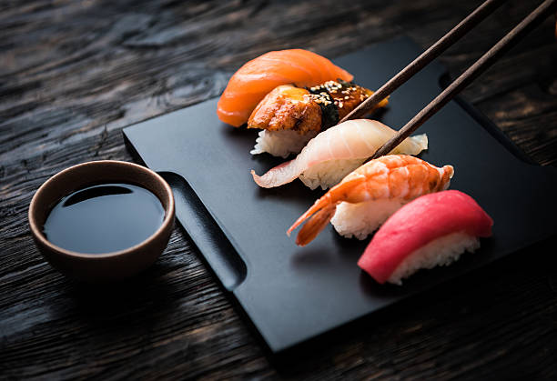
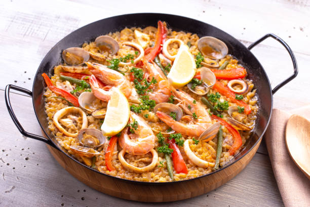
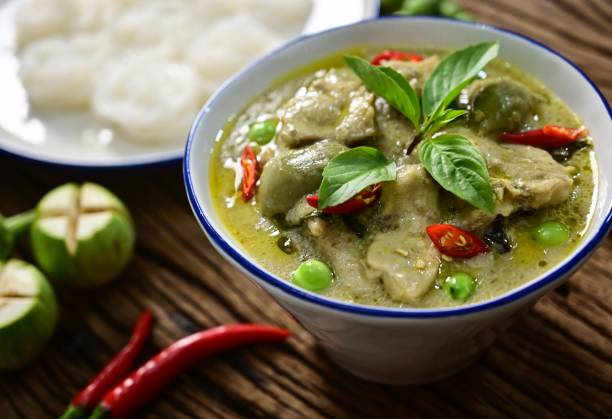
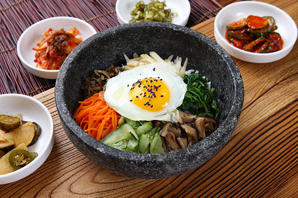

World Cuisine Photo Gallery
A cuisine is specific set of cooking traditions and practices, often associated with a specific culture or region. Each cuisine involves food preparation in a particular style, of food and drink of particular types, to produce individually consumed items or distinct meals. A cuisine is frequently named after the region or place where it originated.
A cuisine is primarily influenced by the ingredients that are available locally or through trade. Religious food laws can also exercise a strong influence on such culinary practices. Global cuisine is a cuisine that is practiced around the world. A cuisine is a characteristic style of cooking practices and traditions, often associated with a specific
region, country or culture. To become a global cuisine, a local, regional or national cuisine must spread around the world with its food served worldwide. Please feel free to share your favorite world cuisine dishes with us!
Tasting the world is here to help you cook delicious meals with less stress and more joy.
We has been the ultimate food resource for the home cook, with daily kitchen tips, fun cooking videos,
and, oh yeah, over 20 countries recipes.
Check out our new recipes: Chinese Dumplings, Japanese Sushi, Korean Bimbimbap, and many more!
Chinese Dumplings
French Mushroom Pie

Japanese Sushi
Indian Fried Rice
Taiwan Pork Rice

Spainish Paella

Thai Curry Bowl

Korean Bibimbap
German Suassage with Sauerkraut